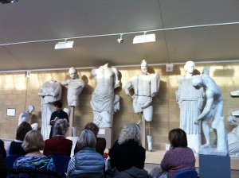
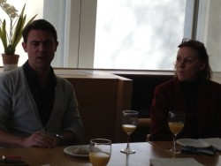
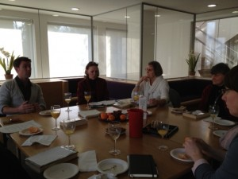

Underground at the Botanic Garden is a very select space, storing treasures collected from around the world for over 300 years. The Herbarium is housed in the Sainsbury Laboratory and was moved from Plant Sciences last year after being frozen to -40°C. This is the first time the whole collection has been under one roof. Darwin’s collection of plant specimens, assembled on his Beagle voyage, are housed here. These include certain now world extinct species. Some of the Herbarium collection of John Lindley (1799 – 1865), famous English botanist, gardener and orchidologist, is also kept here still in its original folders soot blackened from his west London home. Kew has his orchid collection.

It is a fascinating space. It still accommodates the original, worn chair used by Professor Charles Babbington (1861) Henslow’s successor as Professor of Botany at Cambridge, juxtaposed with state of the art work benches and storage spaces with temperature control. Ann Gray and I spent the morning exploring this space. Finally we were taken to see Suzanna Heron’s wonderful, carved wall which she named Henslow’s walk. The vast carved wall imitating some of the elegant leaf shapes and stem angles from Henslow’s collected herbarium sheets.
Judy Fox, Education officer at the Botanic Garden.

No snow! And everywhere has changed. There are snowdrops, hundreds, purple violas in the bee border, there are honey bees out and flying round the hives. In two days of sun, more plants open, the lawns have a sudden rash of daises. The Persian Ironwood flushes a deep pink and I can see it from far across the garden. The most frequent visitor has a baby in a sling and another who kicks up its heels and runs, and runs! In the vaults, the Herbarium should be classed as one of the wonders of the world, deeply frozen to move here from its home at Plant Sciences and beyond, it is being painstakingly filed, recorded, its treasures made available to anyone who wants to visit. Here they will find Henslow’s wonderful lecture illustrations, his grasses ranked by size to show their variation and Darwin’s plants from the Beagle voyage, the definitive, that is, the ‘type species’ of trees and plants edged in crimson. Our first visit from the students was a mixture of discovery and rekindled memories of first visits many years ago; a picnic by the fountain, the stepping stones, falling in the water! They left the Garden with treasure bags filled with cones, seeds, fallen flowers and the knowledge that it takes four people at full stretch to hug the Giant Redwood.
Ann Gray, poet in residence at the Botanic Garden

Here is the ancient world mid-week. Seminars in various corners, held in Greek and Latin. I wish I’d known about the store room on my first day, and not my last – I might have made it my office. It reminds me of a bronze foundry I once worked in; with its dusty shelves, rows of plaster casts, the gantry with its winch – figures in a state of undress, under dust, among boxes of very old files, the odd tool and chair.
I climb the steps and look over the parapet of the store into the main gallery. A figure of Nike, her wings broken to smithereens: these are survivors, certainly, from a great length and depth of time. But it’s the anonymous figures which I keep returning to, the ones with no story of Hermes or Athena or Nike.
I have a brief, enlightening conversation with a doctoral student at the museum desk about Early Minoan culture; I read for hours in the library on the subject of psyche, of thumos (spiritedness), and then return, passing the great scene from the Eleusinian sanctuary of Demeter and Kore giving Triptolemos the secret of grain.
The process of casting results in a small loss of detail, a mere percentage, but discernible nevertheless. I can’t help assessing them for quality of casting, noting air bubbles and seams; before going off again to root around in the classics library underneath the gallery for the trails of stories; the figures they represented; the temples they came from. In my second week the need to keep in mind stories and places melts away. I think more about the acts of faith which made these casts manifest, and of what survives, the intentional finding of the figure by the stone mason’s skill; the commission behind each votive statue, each Kore; the wars which destroyed temples and cities; the burial of statues as rubble or infill; the marks of excavation in our own time. What is still active? On the Temple of Zeus at Olympia’s East frieze, there is a man sitting in the way of Rodin’s thinker. He has no neck, no throat, the right half of his head is missing, yet his profile is crisply intact. A new meaning is possible; the potential is terrifying.
In truth, I am bewildered by the sheer possibility of the room. There is something anarchic about so many postures of the human imagination in one physical space. But each one of the figures is utterly quiet. What I realise, quite steadily over the course of days is, it is light which animates and renders them cinematic; it is a theatre for light.

There was a notable absence of cling film, aluminium foil and plastic lunchboxes at last Thursday’s meeting of the Fitz Book Group. Instead, the table in the Friend’s Room was laid out with a selection of shop bought sandwiches, fruit, biscuits, fruit juice and matching crockery, in readiness for the Fitz’s Poet in Residence Owen Sheers, whose (prose) novel Resistance had been our choice for February.
Resistance is, in Sheers’ own words, ‘a work of fiction set in an alternative recent history’, albeit one which, in the summer of 1940, ‘many feared to be…an all too possible future.’ Set in the Olchon Valley near Abergavenny on the Welsh border, it reimagines a 1944 in which the D-Day landings have failed and a German counter-invasion lands on British soil. The novel begins with a group of women in a remote farming community waking to find their husbands gone, and follows their lives, loves and choices in the wake of the arrival of a German patrol in the valley. The men had been recruited by the government years before, given caches of arms, and trained to sabotage German operations in the event of an invasion.
This last part is historical fact: as early as 1940, the British Government had formed the Auxiliary Units Special Duties Section – highly secret units drawn from local civilian communities, armed and trained to sabotage enemy operations. And it was stories of members from one such unit – the Monmouthshire Auxiliaries – that formed the original inspiration for Sheers’ novel. During the session, he spoke eloquently, often movingly, about how the novel had come to be written: how hearing the ‘man who ran the school bus service’ relate in a radio programme that he had been recruited into the Auxiliaries and that their working life was ‘2 weeks’ had prompted him to begin his research; how young the recruits had sometimes been – ‘one was approached when she was 14’; how they were chosen because of their knowledge of the land – ‘some of them were poachers’; of his visit to the bunkers – ‘they might have been built yesterday’; and most of all, of the importance of the land and landscape itself.

There was laughter too – such as when Sheers asked us collectively whether any of us would have destroyed a certain historical artefact that is central to the novel. The question was prompted by comments from other readers that this was not something a woman (a female character in the novel) would typically do. ‘That’s probably not a good question to ask people who work in a museum,’ a colleague eventually replied.
At the end of the session, Sheers hinted that his next novel was – a ‘contemporary… psychological thriller’, is due to be finished in April. If Resistance is anything to go by, bring it on!

I hear another boy’s voice in letters to his parents, and see his prizewinning copperplate writing in ‘A Christmas meditation’ (the prize was probably a bible).
This time the young writer is the 1940s Acid Bath Murderer John George Haigh.
Stuart Stone of the Radzinowicz Library (part of the Institute of Criminology) shows me the letters from the boy who grew up to be a serial killer. He was in the habit of dissolving his victims’ bodies in acid, thinking that if no body was found he could not be convicted.
He was wrong.
In the library’s collection are illustrated Victorian books that catalogue the weird and wonderful (and some indescribable) criminal tattood body parts, as well as studies of physiognomy and handwriting to indicate criminal tendencies.
They wouldn’t have clocked young John George.
They were great cataloguers and list-makers, the Victorians, as if they hoped that recording aberrations would throw up a pattern and turn their wild guesses into science.
(For example he showed me the Library’s collection of prisoner art, painstaking montages made of thousands of tiny photographs, large sculptures constructed from matchsticks, by people who have all the time in the world).
Above image: a photograph of one of the more distinctive pieces of prisoner art, Morning Smile, made by three young offenders in HMYOI Brinsford (the hippo has been named Asbo by the Institute).
Radzinowicz Library:
Imtiaz Dharker, poet in residence at the University Library.
« Newer posts Older posts »